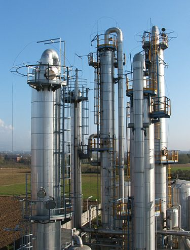

Branches Of Engineering
Engineering is a broad discipline that is often broken down into several sub-disciplines. Although an engineer will usually be trained in a specific discipline, he or she may become multi-disciplined through experience. Engineering is often characterized as having four main branches: chemical engineering, civil engineering, electrical engineering, and mechanical engineering.
Chemical Engineering

Chemical engineering is a branch of engineering which deals with the study of design and operation of chemical plants
and methods of improving production. Chemical engineers develop economical commercial processes to convert raw material into useful products.
Chemical engineering uses principles of chemistry, physics, mathematics, biology, and economics to efficiently use, produce, design, transport and transform energy and materials.
Click here to get more information about chemical engineering
Click here to get more information about chemical engineering
Civil Engineering
Civil engineering is a professional engineering discipline that deals with the design,
construction, and maintenance of the physical and naturally built environment, including public works such as roads, bridges, canals, dams, airports,
sewerage systems, pipelines, structural components of buildings, and railways.
Click here to get more information about civil engineering
Click here to get more information about civil engineering
Electrical Engineering

Electrical engineering is an engineering discipline concerned with the study, design and application of
equipment, devices and systems which use electricity, electronics, and electromagnetism. It emerged as an identifiable occupation in the latter half of
the 19th century after commercialization of the electric telegraph, the telephone, and electrical power generation, distribution and use.
Click here to get more information about electrical engineering
Click here to get more information about electrical engineering
Mechanical Engineering

Mechanical engineering is an engineering branch that combines engineering physics and mathematics principles with materials science to design, analyze,
manufacture, and maintain mechanical systems. It is one of the oldest and broadest of the engineering branches.
The mechanical engineering field requires an understanding of core areas including mechanics, dynamics, thermodynamics, materials science,
structural analysis, and electricity.
Click here to get more information about mechanical engineering
Click here to get more information about mechanical engineering
Other branches of engineering include:
- Marine Engineering
- Aerospace Engineering
- Computer Engineering